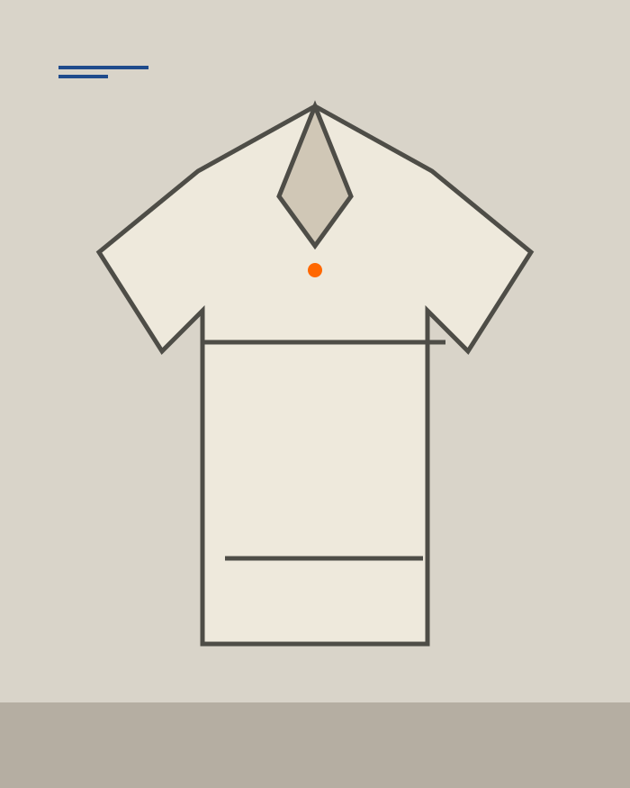
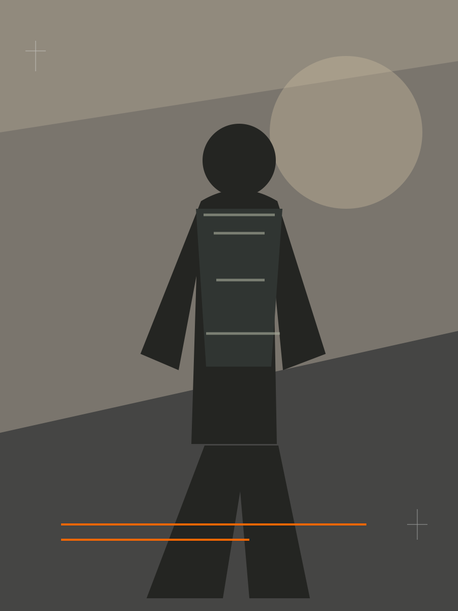
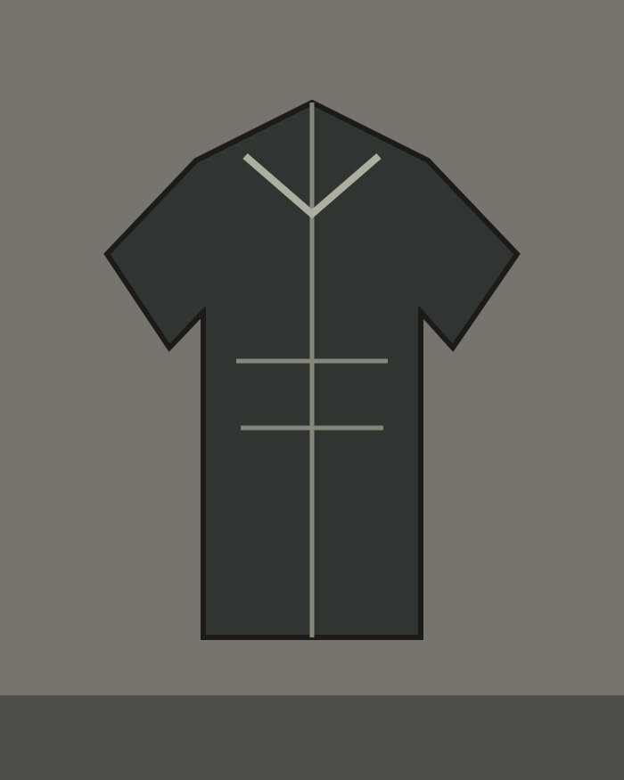
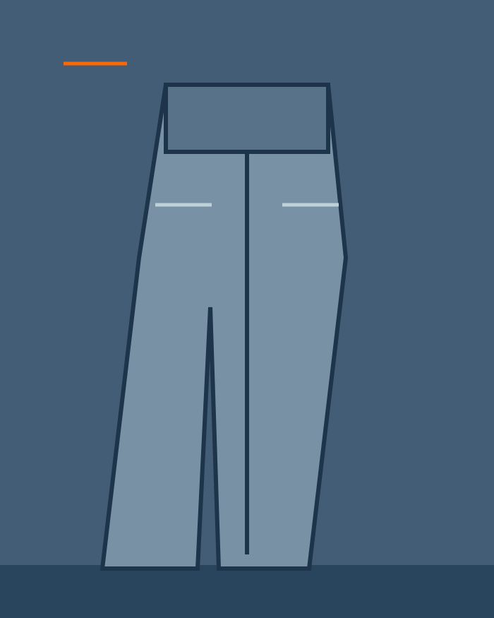
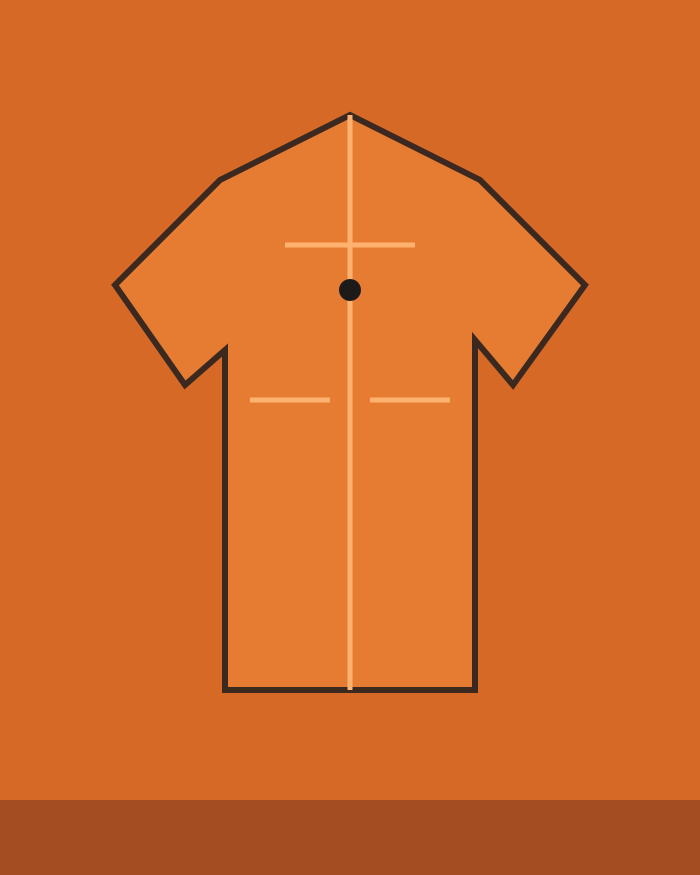
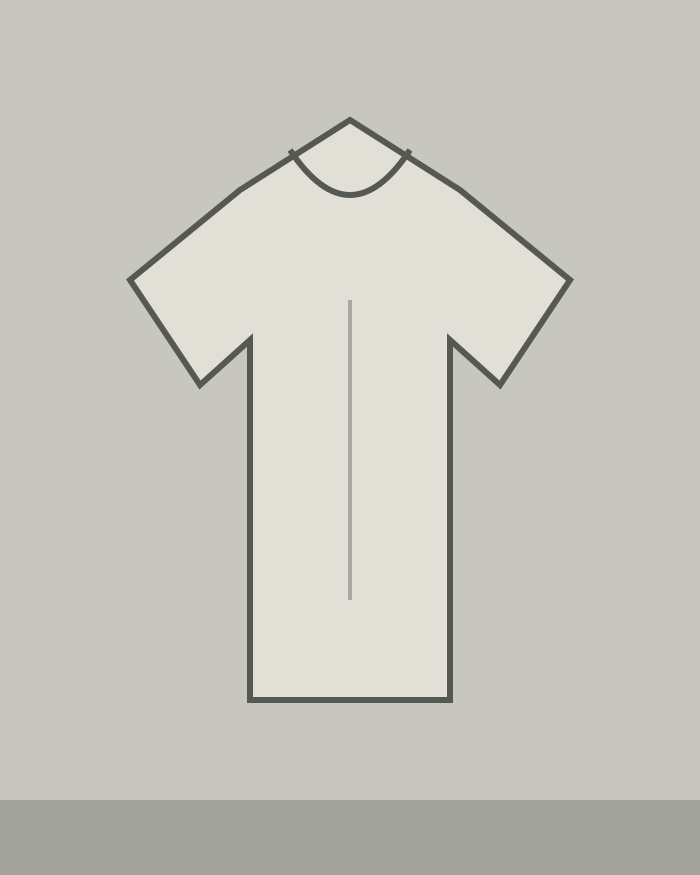
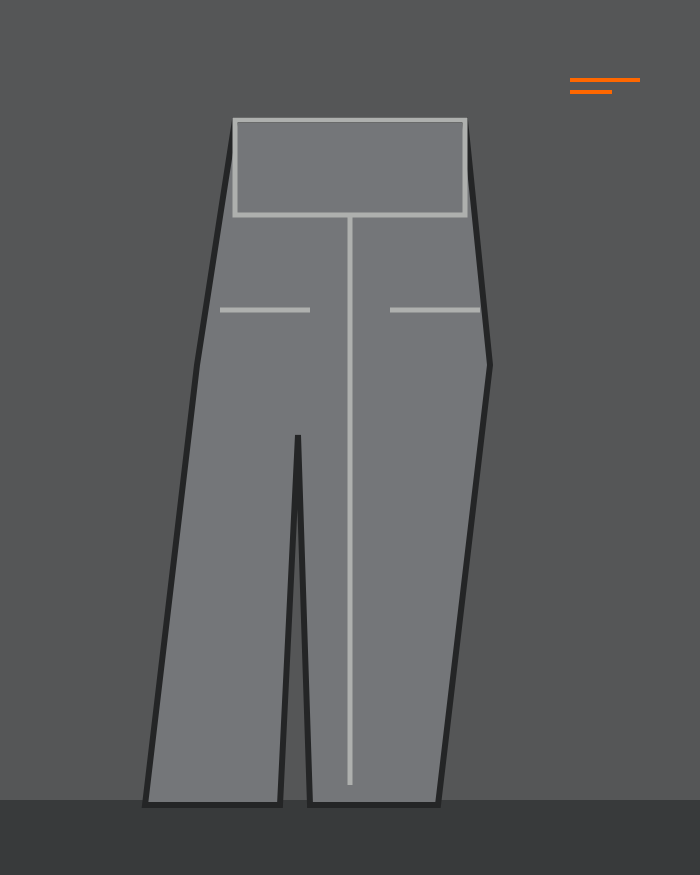
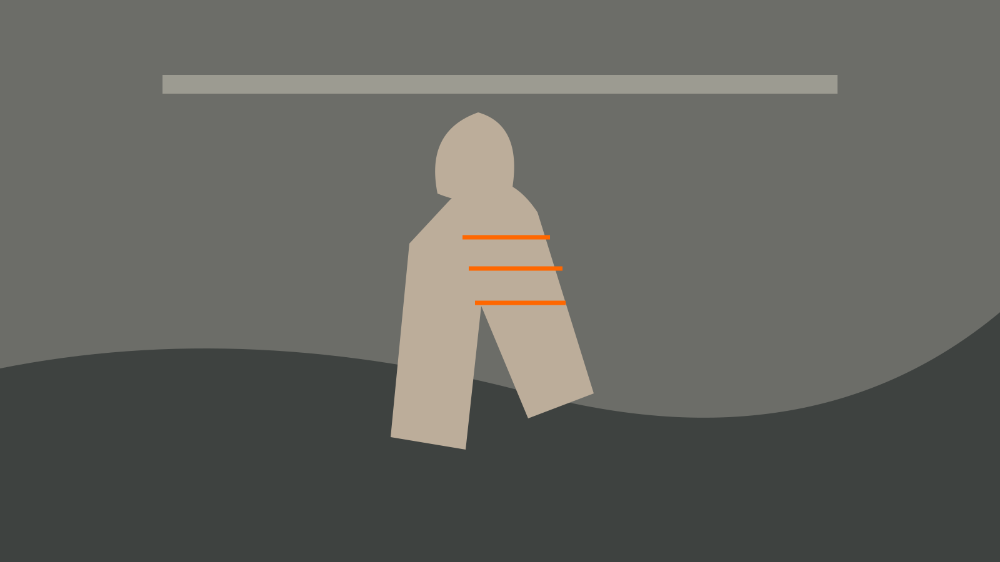
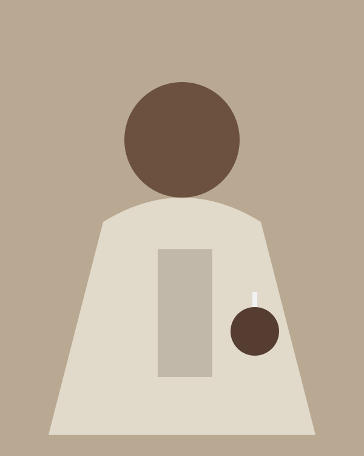
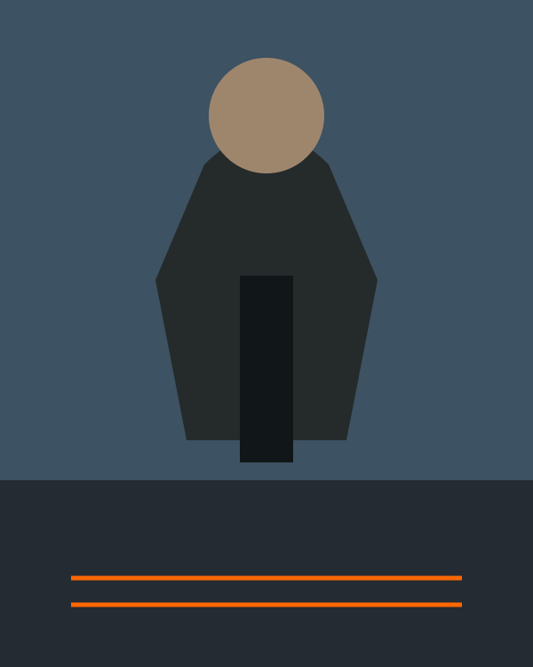

C01 / 01 — CAMISA
Camisa Campo 01
Algodão compacto, bolso aplicado e barra reta.
ALGODÃO / CRUR$ 389
COLEÇÃO 01 /
MATÉRIA EM TRÂNSITO
ATELIER / C01 / 2026
Uma edição curta de peças construídas para acompanhar o dia inteiro. Matérias honestas, forma precisa e espaço para você se mover.

A primeira edição reúne camadas leves, calças de estrutura macia e uma camisa que trabalha bem sozinha. Tudo entra pela matéria: o que toca a pele, o que resiste ao uso, o que pode ser reparado.
01 / PEÇAS EM CAMPO
Escolha por sensação, construção ou situação. Cada peça traz sua ficha para você decidir com calma.

C01 / 01 — CAMISA
Algodão compacto, bolso aplicado e barra reta.

C01 / 02 — CAMADA
Sarja encerada leve para quando o tempo vira.

C01 / 03 — CALÇA
Cintura confortável e volume que não prende o passo.

C01 / 04 — CAMADA
Uma camada curta com fechamento de pressão e presença.

C01 / 05 — BASE
Malha seca, gola firme, feita para repetir.

C01 / 06 — CALÇA
Tecido leve, pregas precisas e bolso interno.

NOTA 01 / 07:42 / PRIMEIRA CAMADA
A melhor peça é a que some no movimento e aparece na memória.
Descrevemos o material antes de adjetivá-lo. Você encontra origem, peso, composição e o jeito certo de cuidar para a peça durar mais.
01 / ORIGEM: ALGODÃO
Resistência seca, brilho discreto. Limpar com pano úmido; não lavar a seco.
02 / ORIGEM: SÃO PAULO
Estrutura sem rigidez. Lavar do avesso em água fria e secar à sombra.
03 / ORIGEM: MALHA
Toque fresco e retorno de forma. Evitar alvejante; guardar dobrada.
Trabalhamos em pequenos lotes para observar cada construção de perto. Quando uma peça pede reparo, o ateliê continua fazendo parte dela: oferecemos orientação e conserto de componentes selecionados.
A coleção foi testada em dias que não cabem numa pose. Camada que abre quando esquenta. Bolso que encontra a chave. Barra que acompanha a calçada. A ficha técnica importa porque o corpo vai usá-la.
Ler a nota completa ↗

05 / PRÓXIMA EDIÇÃO
Uma mensagem quando a próxima edição entrar no ar. Sem sequência automática, sem ruído.